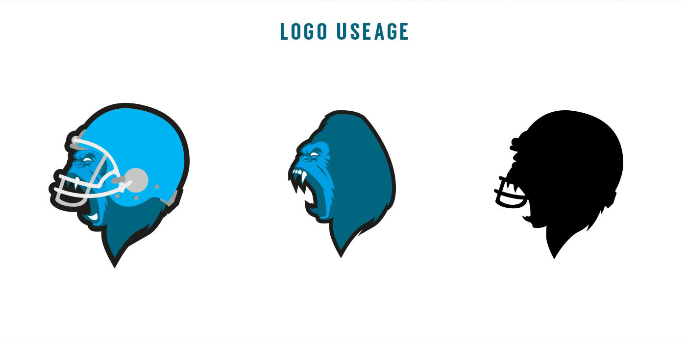

A bit more about me...
I am a self-motivated and productive person currently working as a Digital Designer. I started my design path back whilst studying Digital Media Design at the University of Winchester and freelancing with a local Digital Marketing company. Then continuing onto a Masters degree in Digital Media Practice where I graduated into my current role
I'm extremely into music, so much so that I taught myself how to play three types of guitar. I have such a passion for learning that I've managed to continue long after my time in education. You see me now with over three years’ professional experience as a designer practitioner creating an array of high-quality digital products using the whole Adobe Creative Cloud with a working knowledge of HTML, CSS and JavaScript.
The Hungry Bunch
Larry and Louise are the co-owners of a small mobile burger van based in the Winchester City Centre. They rely completely on physical customers that come to the van each day as the source of income for the business. They’d like to grow their business so it can be used by companies like Just Eat and Deliveroo. They don’t have a brand identity besides their own names.

My Role
Within this project, I will be responsible for the creation of a brand identity and logo design that they can implement across their existing online platforms such as Facebook and Instagram. At the end of this project, I will be giving them all of the assets to implement as and when they want to. Giving them full control of their business decisions and how they can be perceived online.

The Solution
In order to fix this, I’ll create a whole new Brand Identity for them. It will be designed so that it can fit in with their existing platform on Facebook and Instagram. Whilst giving them the ability to grow the brand to compete with other local businesses on Just Eat and/or Deliveroo. The branding will also include a few physical pieces of marketing such as posters, flyers and other small print-outs.

My Design Process
I started out wanting to create a new identity that would stand out on platforms like Just Eat and Deliveroo as that’s the market they wanted to grow into. I went for an older cartoon style as there has been a slight resurgence of it being used thanks to mainstream media using it, one of which being the video game Cuphead. I tried a few different variations on that style before I came up with the mascot.
“... it was a fun brand to make design so ensuring that continues through physical and digital interactions with customers is key.”
Using a mascot then to go alongside the name of The Hungry Bunch. I also used the strong colours of red as the primary and yellow as the secondary colour. These colours are both synonymous with fast food brands. The colours would also be used as laying out the different assets so red being the main course with yellow being sides and drinks.

Challenges
Originally there was going to be more than one character hence the name but as time was a bit short. I ended up incorporating the characters into the food items themselves. Other challenges included trying to get the right tone of voice. I wanted to give the client the ability to have either a fun or cheeky tone of voice. After all,it was a fun brand to make design so ensuring that continues through physical and digital interactions with customers is key.


Evaluation
This project was actually a self-directed brief so these clients do not actually exist. I decided to post this project on Behance, Instagram, and on Reddit to gather any feedback from people. One of these bits of feedback was in relation to the name not making sense considering there was only one mascot visible on the logo. This would be something I would then take more time to focus on if given the chance to work on it again.In fairness, as this project is self-initiated anyway there is nothing stopping me from developing this further by including more characters.

The Winchester Silverbacks
When I started at The University of Winchester, the Winchester Silverbacks American Football team were also starting out. I joined up at the second ever training session within the first month of starting at the Uni. As the team was starting out, we didn’t have any branding or visual identity besides the name that was chosen and a very basic colour scheme.
My Role
I initially volunteered just to create a logo for the team, which would be made to be put onto kit, apparel and our social media pages. Later on I volunteered to flesh out more of the brand by designing some kit options, solidifying some form of brand guidelines and mocking up some banners/posters.

The Solution
The solution as explained in part of my role was to create the logo, visual brand and some printed materials. These would be made to be used physically as part of the kits, team merchandise and social media page on Facebook. The posters and banners would be used at Freshers Week to help get new team members to sign up. The team merchandise and kit would be designed so that we have an identity not just off the field but on the field as well.
My Design Process
The process began by trying to create a logo that would put an emphasis on the strength and power that a Silverback gorilla has. Whilst also including an element that links the logo back to being part of an american football team. The blue was a colour that had been decided on prior to me joining so it was something that had to be included.
Later on, the brand evolved to include some silver elements to show it’s a modern team and a modern sport in comparison to some of the other sports being played at the university. The font choices were also done to further push how modern we were.
Challenges
When the kit was being developed, I wasn’t directly involved with it as I wasn’t part of the team anymore. However they had been supplied with some of the colour schemes I’d come up with. This is why the kit looks slightly different to the once that was used in the end. The logo was also amended slightly to fit onto the fits. The helmet was removed which was a decision by the committee at the time as we had then established we were an American Football team by that point.
“...having a strong visual identity that was established near the beginning, the team would not have been able to grow”
Evaluation
Since I have left, the team has continued to develop the branding further. Different colour schemes were used and eventually a new logo has been designed. However the basic identity of the team has remained. It’s something I can still talk about today with pride that I helped set up the team. I believe that without having a strong visual identity that was established near the beginning, the team would not have been able to grow.
Henry's Honey
Henry Adams is a small business owner and currently sells jars of honey from his own beehives at the local market. He’s been doing this successfully for the last 4 years however he now needs to grow his business. He as well as many other business owners across the country during the COVID-19 pandemic is finding it difficult to keep bringing in the same amount of revenue. The brand doesn’t really exist so much besides the name itself and the word-of-mouth association his current customers have.

My Role
On this project, my job as the designer is to create any digital assets that can be used to help promote the business on new digital platforms. I’m also responsible for the creation of any assets that can be used in digital marketing techniques such as social media posts and email marketing campaigns. I would also be responsible for the redesigning of the product packaging itself.

The Solution
The solution I proposed was to align all of the different products and services together under a cohesive brand identity using the name ‘Henry’s Honey’. I’d design a logo that would work across physical and digital media. By doing that, I would be able to create a brand that can reach potential customers but be approachable as well. I’d be taking advantage of modern digital marketing techniques by designing an email campaign and a programmatic banner advertising campaign.

My Design Process
Starting off with the logo is my preferred method when building a brand identity. Logos allow me to boil down the most fundamental components of a brand into something focused. From a logo, you can begin to expand back out again, using any fonts, colours and visual features in producing the other assets.
I chose this logo in the end because a lot of honey brands default to using a bee as the main icon. I wanted to make the product stand out. Changing to something of a more digital product, I used black as the primary colour, the white and orange as the accent colours. Further emphasising the quality of the product itself. If I used orange as the base, it would look fun and friendly which isn’t something that would suit a bespoke product such as this.
“...a lot of honey brands default to using a bee as the main icon. I wanted to make the product stand out.”
Once the logo was designed, I focused on designing the jar itself as this is the object the customer should be engaging with the most. I then was able to use the product as the main focus point for any posters, banners and email campaigns I designed past that point.

Challenges
One of the main challenges I faced when producing this was the fact I don’t have very much experience with designing physical products. It’s not as straightforward as a website or poster as those can have a specific call to action, something you want a user to do when they engage with it. I had to think about what they’d want it to represent so I wanted it to be modern, sleek and a bespoke product. As it’s all produced fresh and organically, it needed to reflect the time and effort that had gone into the design.


Evaluation
Overall I felt like the objective was met in that the brand has been created digitally and meets the criteria set out at the start. This project is a self-initiated brief coming from the website Briefbox. Unfortunately they’ve updated their website so I couldn’t submit my work there to gather any feedback. However I have posted this project onto my Instagram and Behance pages instead.

Molecule Travel Agency
Molecule is a Travel Agency that’s currently operating out of a single office. The company wants to move into a more digital space, with the potential of closing the office space if all goes well and working remotely. The company has no online presence and needs a brand to reflect this move.
My Role
My primary function here is to build them an online brand identity however this will be fleshed out with the design of a website. I won’t be building the website for them however my content will be handed over to a developer to implement. I’ll also be educating Molecule on what each online channel is best suited for.
The Solution
In order to solve these problems for Molecule Travel. I was going to update their Visual Identity with a revised logo design aimed towards their online audience of 18-30 year olds who use them for booking hotel and flight packages. As the company has no online presence I'll be designing a website that will be aimed at allowing customers to book flights and hotels through it whilst informing them on the best deals.
My Design Process
How I started this was to break down the needs and purpose of the website. I’ve partially done this while outlining the solution. From that I could begin to think about the branding and how to target the specific audience. I started by creating the logo, coming up with keywords and phrases that’d be associated with the brand. I went for an identity that puts the emphasis on ‘finding your perfect holiday can be an exact science’.
“I went for an identity that puts the emphasis on finding your perfect holiday can be an exact science”
Once the logo had been developed, I could take the colours, fonts etc. and develop a visual identity. I wanted to focus on individual travellers rather than families as the trend of going on a ‘gap-year’ for people in the target audience is popular. Removing any form of stigma that could be attached to people travelling on their own, reducing any risk or danger that could be associated with doing so with a trusted platform.
Challenges
One of the main challenges was focusing the main call to action on the top of the website. I wasn’t sure whether it should be about understanding more about the company or lead straight to a booking as the company doesn’t have any online presence whatsoever. However I decided on ensuring people could begin booking a holiday as soon as they arrived onto the website. I added a secondary call to action as an alternative to learn more.
Evaluation
As this project was a self-initiated project without a real client I measured the success by being self-critical about my own work. I feel like the final outcome does a good job about illustrating how their brand could work online. Using images that have a single subject in them to promote single travellers, clear call to actions in each section making it easy for users to know what to do, whilst also being informative about the company.
Bark Application
The problem that this application attempts to tackle is to build a network of dog owners that can interact with one another as part of a pseudo-social media platform. Taking inspiration from platforms such as Instagram where photographs are the main content. I wanted to learn more about user experience design techniques and methods.

My Role
This project was my FInal Major Project for my Masters degree in Digital Media Practice. My responsibilities for this project included the designing, branding and building a proof-of-concept application. Other responsibilities included some user research testing using Survey Monkey. Emphasising on the user experience process and ensuring the product would be of practical use if it was to be released.
The Solution
The application in question was aimed at the audience of new pet owners, specifically dogs, and creating a solution that could be used as an online resource for these users. As well as being framed as a social network, it could also be used as a learning tool. As I hadn’t looked after dogs myself I needed to do some research.
My Design Process
In one of my modules of my Masters degree was all about User Experience, Interface and User-Centred Design where I wrote an in-depth report about whether it’s better to develop a prototype using HTML and CSS or using software such as InVision or Sketch. In conclusion, in order to design an authentic user experience, you should have some knowledge of HTML and CSS.
“...to design an authentic user experience, you should have some knowledge of HTML and CSS”
Challenges
At the time of production, Adobe Experience Design was still in Beta stage which was why I wanted to use it as it was an emerging piece of software. However the tools inside the software were limited in comparison to what they are now and resources on how to use it were just as limited. I concluded in my report that these pieces of software were suitable for showing a proof-of-concept. I got to work producing low-fi wireframes to get a good understanding of how people could interact with the app.“.. people learn how to look after dogs mainly from other people, word of mouth about what works, trial and error and time.”
A challenge I faced was that I wasn’t the intended audience of the application. So In order to understand the audience, I needed to gather some information about what people would benefit most from an app like this. So by using a survey, I understood the needs and wants of the application. The responses I got were invaluable. I gathered that people learn how to look after dogs mainly from other people, word of mouth about what works, trial and error etc. This helped to further justify the purpose and features of the application itself.
Evaluation
Due to this project being part of my Masters degree there was a deadline on it. I was given from April to September 2017 to complete the project. However during this time I was also looking for full-time employment. In August I received a Job Offer so I had to then juggle my time between that and this project. I believe that the project does show a positive proof-of-concept that could be developed further.
Portfolio Website
My portfolio website previously was out of date, didn’t represent my current skill set, and had the potential to hold me back from new opportunities. It was last updated back in 2019 however the fundamental brand and structure hasn’t been changed since 2017..
My Role
For this project I was the client, the designer, and the developer. As this is something extra, I had to fit in time to complete this outside of my full-time job. Due to already having a job however this meant that there weren't any time constraints on when it had to be produced.
The Solution
I designed, built and coded a portfolio website that can be updated with multiple projects. It will also be a small hub for my online presence, linking to my Instagram and Behance pages to generate traffic. The colour orange has been a staple of my brand so I want to continue that in addition to including new illustrations that best represent me.
My Design Process
Before beginning development, I wanted to clarify exactly what I wanted my site to be. So I compared my work to some of my favourite online designers that I follow such as Rocky Roark and Mat Roff. Their styles are ones that I admire and they use the right blend of illustration into graphic design and branding work.
I wanted to push myself with this project so I framed it partially as a UX project by ensuring that potential clients and employers’ needs were taken into account. The information needs to be clear and strong call-to-actions need to be visible on each page. Before coding began, I needed to plan out each page and it’s contents. I was able to do this through Trello and wireframing the whole website using Adobe XD.
Click here to view the website built in Adobe XD.
I also needed to update my own branding. As this website is going to be used as an extension of any job applications I make I chose to keep my own name rather than create a different brand. I wanted to keep the fun side of my previous branding which was done with the orange colour. I wanted to integrate more of my illustrations into the website rather than just having one image at the top.
Challenges
The greatest challenge I came across was time. With my current full-time position I didn’t feel like I could truly deliver a portfolio website that best reflects my skills whilst keeping it updated. The layout of my projects also didn’t reflect this so I needed to tailor it towards
Another challenge I encountered was with the development of the site itself. I’ve been using Github Pages as my portfolio website ever since my second year of University as it’s easy for me to update whilst giving me full creative control. However my understanding of HTML and CSS can only take me so far. I wouldn’t consider myself a Developer by any means or stretch of the word, I use code as another tool to create my ideas. As I customise my website further away from the initial Bootstrap template I used, optimisation for multiple browsers and devices became increasingly difficult.
“... I use code as another tool to create my ideas”
Evaluation
After producing the website, I’ve been passing the link onto online communities such as Reddit, Behance, and my peers to gather what needs to be amended. On the whole I believe that the site meets my needs for now. I will continue to refine the different parts of the website as I still think it could be better. I’m happy with the overall brand of the website however so anything else I’d amend would be technical. I mentioned one of the challenges of being browser and mobile optimisation, and this is something I continue to work on.